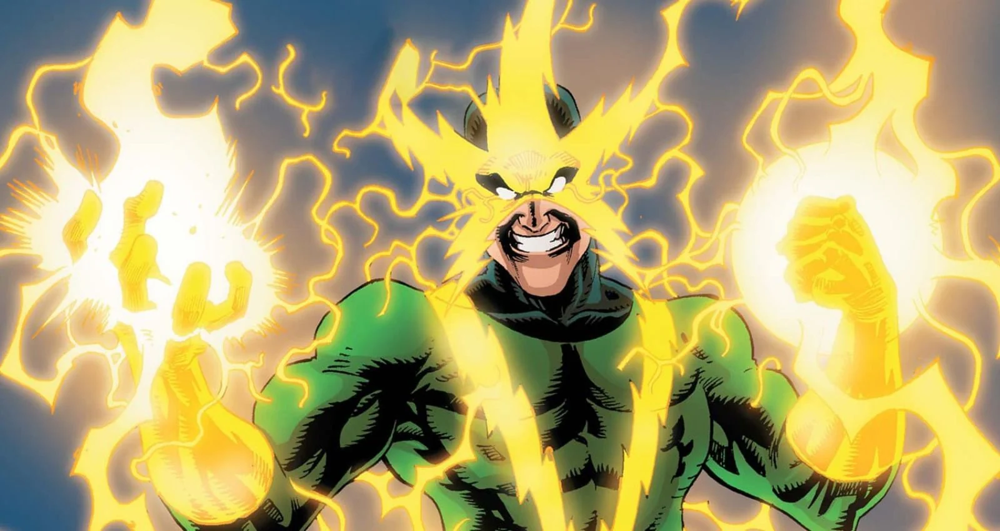
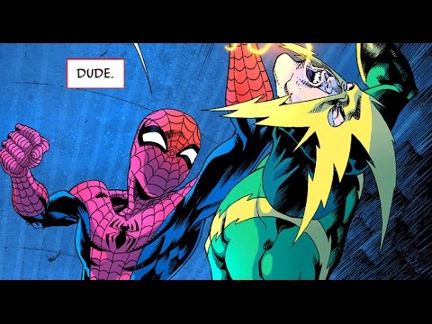
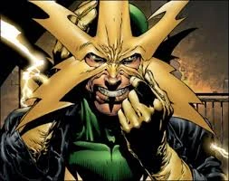

Spider-Man|
El Duende Verde |
El Hombre de Arena|
Doctor Octopus|
Mysterio|

¿Quién es Electro? (Perfil Biográfico Completo)
Electro, cuyo nombre real es Maxwell "Max" Dillon, es uno de los supervillanos más antiguos, destructivos e inestables del catálogo de Marvel Comics. Posee la capacidad de transformar su propio cuerpo en un bio-condensador viviente capaz de manipular, almacenar y proyectar niveles colosales de energía eléctrica.
Nacido en Endicott, Nueva York, Max creció bajo la sobreprotección sofocante de su madre tras el abandono de su padre. Aunque soñaba con convertirse en un brillante ingeniero eléctrico, terminó trabajando como técnico liniero y reparador de redes eléctricas para la compañía energética Consolidated Edison. Su personalidad egocéntrica, resentida y codiciosa lo mantenía frustrado con su estilo de vida mediocre, buscando siempre una oportunidad para obtener riqueza fácil.
El Accidente y la Mutación Bioeléctrica
El evento que cambió su vida ocurrió mientras trabajaba en una torre de alta tensión durante una tormenta eléctrica:
- El accidente: Un compañero de trabajo quedó atrapado en la parte superior de un poste de luz averiado. Dillon accedió a rescatarlo solo tras exigir una compensación monetaria extraordinaria. Mientras manipulaba las líneas vivas de alto voltaje, un rayo atravesó el cable eléctrico en el que se encontraba sostenido.
- La transformación: La descarga de millones de voltios no lo mató; en su lugar, la combinación de la corriente estática y la energía del rayo alteró de forma permanente el sistema nervioso central y el metabolismo de Dillon. Sus células mutaron para convertirse en una batería bioquímica capaz de almacenar y procesar electricidad a escala masiva.
- El surgimiento del criminal: Al descubrir sus capacidades, Dillon abandonó su empleo y utilizó sus habilidades para robar bancos y laboratorios bajo la identidad de Electro. En su primera incursión, robó la caja fuerte de J. Jonah Jameson en el diario Daily Bugle, lo que llevó al editor a acusar falsamente a Spider-Man de ser el ladrón disfrazado.

Creadores Detrás del Personaje y su Diseño Visual:
- Stan Lee (Guionista y Editor): Concibió al personaje para introducir una amenaza basada en la pura energía física, obligando a Spider-Man a recurrir a soluciones científicas (aislantes químicos y trajes de goma) en lugar de pelear cuerpo a cuerpo.
- Steve Ditko (Dibujante y Co-creador): Diseñó el estrafalario e icónico traje verde y amarillo con la característica máscara de estrella en forma de rayos dorados. Este diseño llamativo facilitaba la impresión a color en la era de los cómics de los años 60 y representaba las descargas de alto voltaje.

Hizo su debut oficial en el cómic The Amazing Spider-Man #9 (publicado en febrero de 1964).
Poderes, Capacidades Técnicas y Debilidades Específicas
Electro es una potencia destructiva ambulante capaz de rivalizar con los superhéroes más fuertes de Marvel:
- Generación de alto voltaje: En condiciones normales puede proyectar descargas eléctricas de hasta 100,000 voltios desde las yemas de sus dedos. En estado hipercargado ha logrado sobrepasar el millón de voltios.
- Vuelo electromagnético: Puede levitar y desplazarse a altas velocidades deslizándose sobre las líneas de corriente eléctrica o manipulando los campos magnéticos naturales de la Tierra.
- Electro-quinesis y control tecnológico: Capaz de anular sistemas de seguridad electrónicos, hackear computadoras mediante impulsos bioeléctricos y alterar el sistema nervioso de seres vivos.
- Forma de energía pura: En arcos modernos, Dillon ha aprendido a transformar todo su cuerpo físico en electricidad pura, viaja a través de enchufes y cables de fibra óptica a la velocidad de la luz.
- Debilidades cruciales:
- Agua e inundaciones: El contacto repentino con agua masiva causa cortocircuitos severos en su cuerpo, descargándolo por completo y dejándolo inconsciente.
- Aislantes de caucho/goma: Spider-Man suele vencerlo utilizando trajes especiales o redes compuestas por polímeros no conductores de electricidad.
- Agotamiento energético: Si agota sus reservas de voltaje sin recargarse de una fuente eléctrica cercana, sus capacidades físicas caen a niveles de un humano común.

Acontecimientos Clave y Los Seis Siniestros
A lo largo de sus más de seis décadas de trayectoria, Electro ha dejado una huella imborrable en el universo de Marvel:
- Fundador de Los Seis Siniestros (1964): Reclutado por el Doctor Octopus en The Amazing Spider-Man Annual #1 para formar el primer equipo organizado de villanos contra el Hombre Araña.
- La Fuga Masiva de "La Balsa" (2005): En New Avengers #1, Electro fue contratado para provocar un apagón masivo en la prisión de supervillanos "The Raft", liberando a docenas de criminales peligrosos y provocando accidentalmente la formación de los *Nuevos Vengadores*.
- Supercarga y Evolución: Tras someterse a experimentos de potenciación por parte de villanos como The Mad Thinker o The Rose, Electro ha incrementado su capacidad de almacenamiento a niveles donde su propia mente se volvió inestable debido al constante flujo de electrones.
Conclusión
Electro representa el peligro latente del poder absoluto en manos de un individuo guiado por el rencor, la codicia y la falta de empatía. Aunque sus motivaciones suelen centrarse en la ganancia material y la demostración de superioridad física, su temible nivel de destrucción obligó a Spider-Man a demostrar constantemente que el ingenio científico, el estudio de la física y la astucia son sus mejores herramientas para vencer a una fuerza de la naturaleza.
